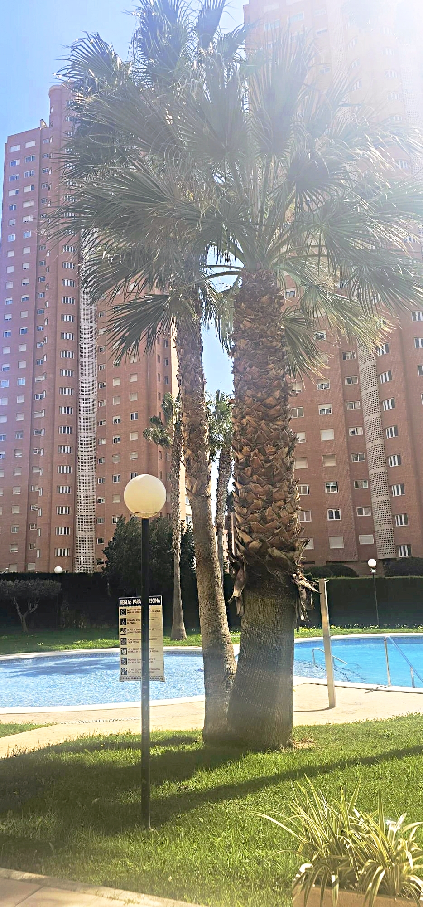
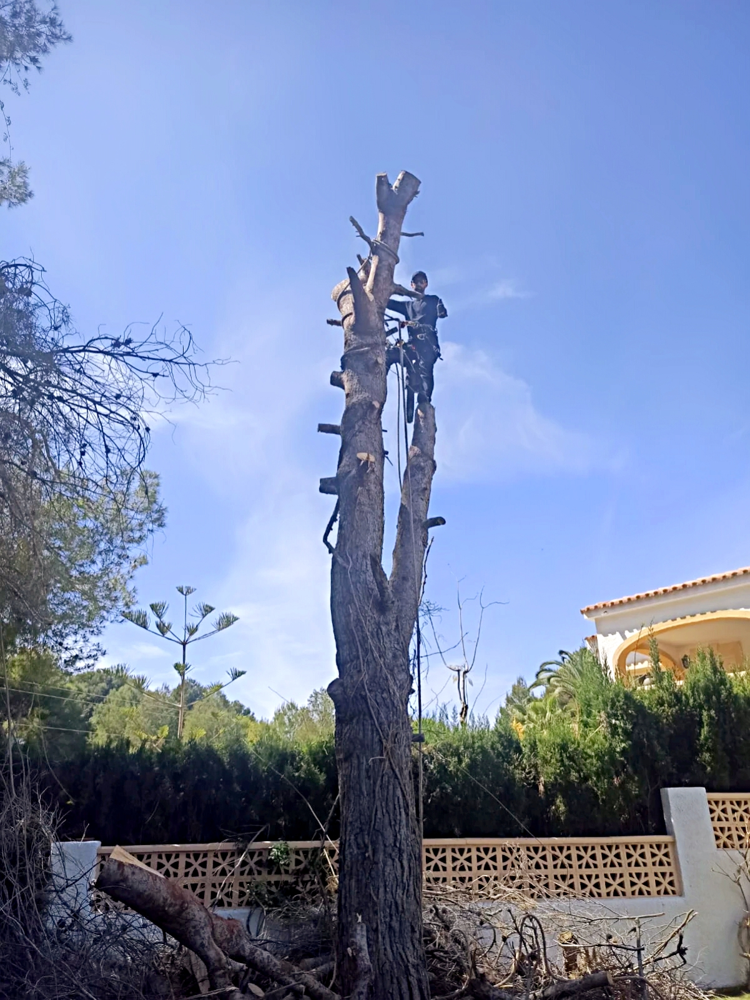
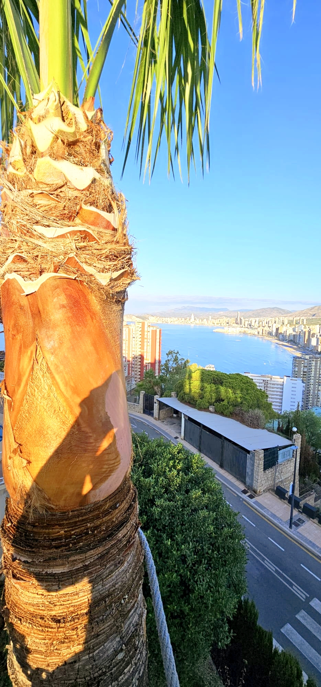
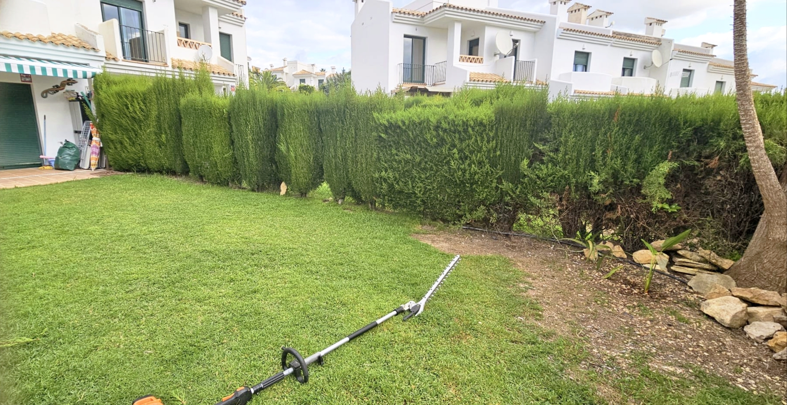
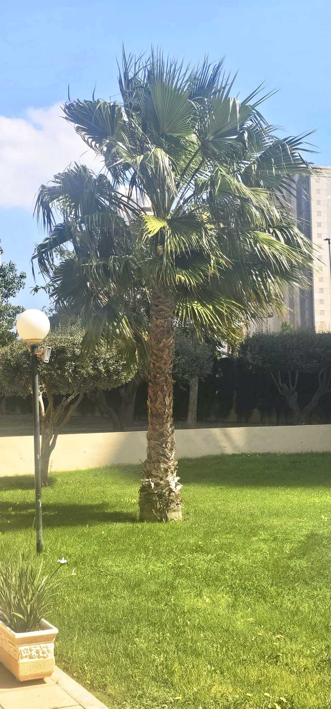
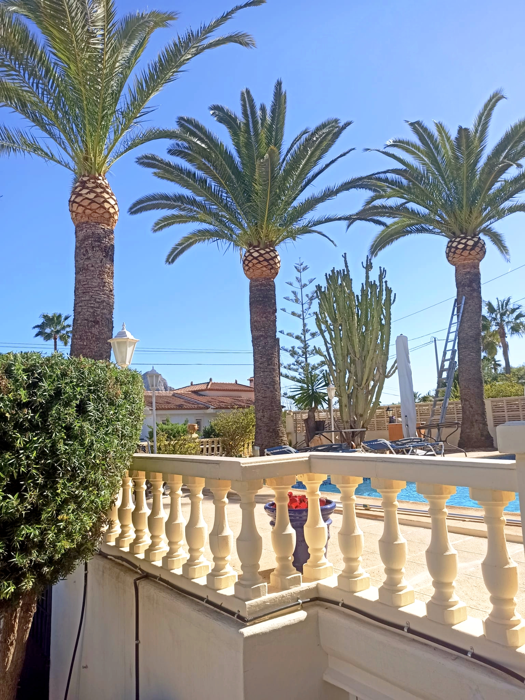

Poda profesional, trabajos en altura y mantenimiento de jardines en la provincia de Alicante. Más de 10 años de experiencia con total seguridad.
Somos JJ Podas, empresa especializada en el cuidado y mantenimiento de palmeras y jardines en la Costa Blanca. Con más de 10 años de experiencia, ofrecemos un servicio profesional, seguro y de calidad.
Realizamos trabajos en altura con equipos homologados y personal cualificado. Nos adaptamos a particulares, comunidades de vecinos y hoteles.

Resultados reales en la Costa Blanca





Soluciones profesionales para palmeras y jardines
Limpieza y poda profesional de todo tipo de palmeras. Eliminamos hojas secas, frutos y elementos de riesgo.
Acceso a palmeras y árboles de gran porte con equipos de seguridad homologados y personal cualificado.
Poda de formación, mantenimiento y saneamiento de todo tipo de árboles y arbolado urbano.
Cuidado integral de jardines particulares, comunidades y hoteles. Siegas, recortes y tratamientos.
Recogida y eliminación de todos los residuos generados. Dejamos la zona perfectamente limpia.
Contratos de mantenimiento para hoteles, comunidades y empresas. Presupuesto personalizado.
Equipos de protección homologados y seguros de responsabilidad civil en todos nuestros trabajos.
Respondemos en menos de 24 horas y nos adaptamos completamente a tu agenda.
Presupuesto gratuito y sin compromiso. Precios competitivos con la máxima calidad.
Más de 10 años y 500 clientes satisfechos avalan nuestra trayectoria profesional.
Cubrimos toda la provincia de Alicante
Realizamos trabajos en toda la Costa Blanca y provincia de Alicante.
Gratis y sin compromiso — respondemos en menos de 24h